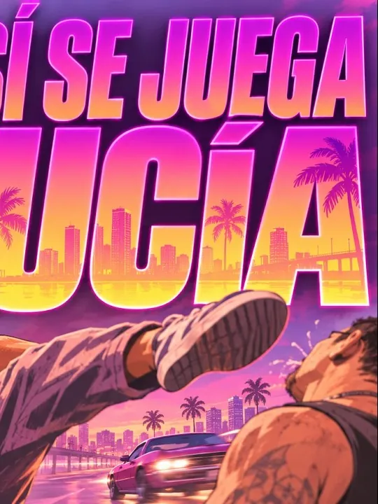
PersonajesVer ahora
Vídeos de GTA 6 en español
42 análisis de Grand Theft Auto VI ordenados por tema. Todos hechos con material oficial.
GTA 6: personajes
JASON DUVAL | Guía de Personaje (Ep. 2) Disparos precisos y combate táctico en GTA 6
curiosidades de Real Dimez, las raperas de Leonida
 PersonajesVer ahora
PersonajesVer ahorapor qué Jason vive gratis en casa de Brian Heder
 PersonajesVer ahora
PersonajesVer ahoracómo construyó Boobie Ike su imperio desde cero
 Personajes2:32Ver ahora
Personajes2:32Ver ahoracuriosidades de Jason Duval
 Personajes2:09Ver ahora
Personajes2:09Ver ahoraquién es Cal Hampton
 Personajes2:18Ver ahora
Personajes2:18Ver ahorael pasado de Lucia, explicado
GTA 6: leonida
 Leonida2:33Ver ahora
Leonida2:33Ver ahoralos pantanos de Grassrivers
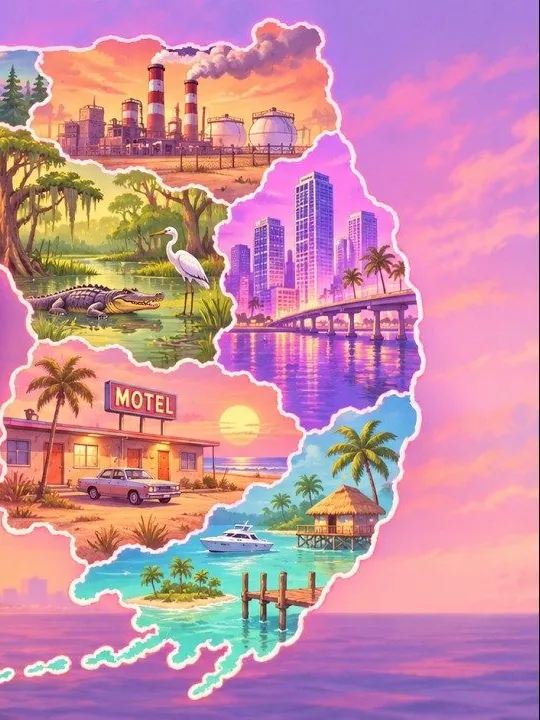
Leonida2:16Ver ahoralas 6 regiones de Leonida
 Leonida2:07Ver ahora
Leonida2:07Ver ahoraVice City de día vs de noche
GTA 6: música
 MúsicaVer ahora
MúsicaVer ahora¿Cocoteo FM en GTA V es la mejor radio del juego?
 MúsicaVer ahora
MúsicaVer ahoraAfroBank FM: música africana y dinero en GTA 6
 MúsicaVer ahora
MúsicaVer ahoraMix de Radio GTA 6 Extendido: Las Emisoras Filtradas que Nadie Esperaba
 MúsicaVer ahora
MúsicaVer ahoramúsica y podcasts también a pie, así funcionará
 MúsicaVer ahora
MúsicaVer ahorapor qué AfroBank FM es la mejor radio del juego
 Música2:20Ver ahora
Música2:20Ver ahoraCocoteo FM, la radio de Bad Bunny
GTA 6: mecánicas
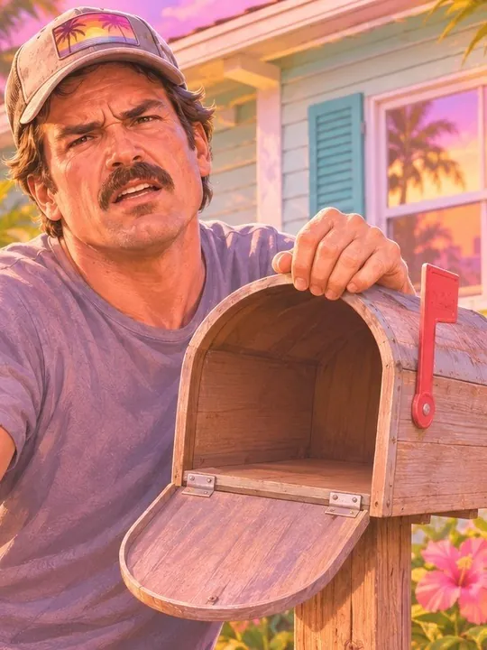
MecánicasVer ahoraPerista de almacén de Brian, código 7700 y cuándo te PAGA
Tu botín NO es dinero en GTA 6 (el mito que te deja sin nada)
Glitch de dinero infinito, paso a paso
 MecánicasVer ahora
MecánicasVer ahoraEl cambio radical en las misiones
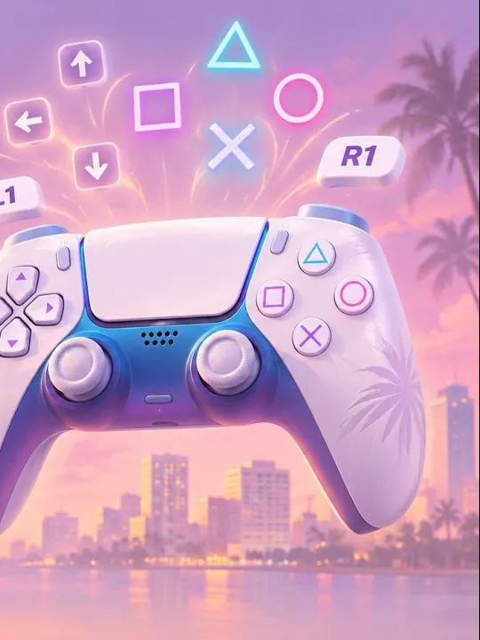
MecánicasVer ahoraTrucos de los 35 de GTA V que podrían volver
 Mecánicas2:09Ver ahora
Mecánicas2:09Ver ahoraTodo lo que podrás hacer
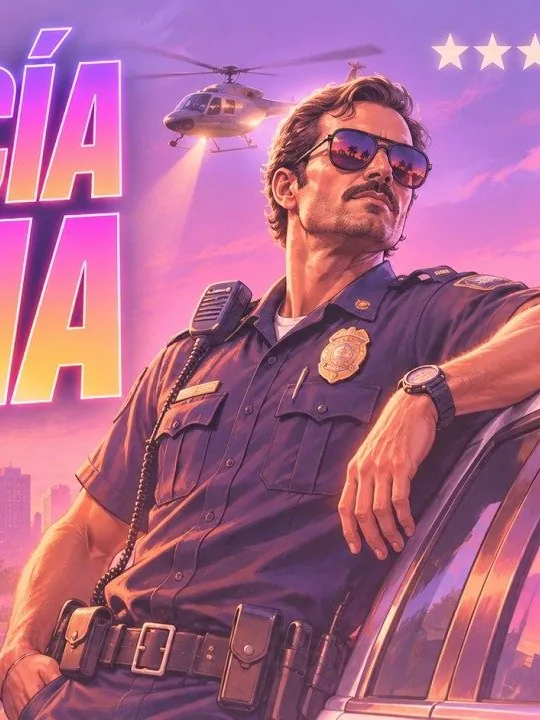
Mecánicas2:22Ver ahoraLa policía es más inteligente
GTA 6: historia
 HistoriaVer ahora
HistoriaVer ahoralas 6 misiones ocultas en el tráiler de lanzamiento
 Historia2:48Ver ahora
Historia2:48Ver ahoraJason y Lucia: el golpe más peligroso
GTA 6: curiosidades
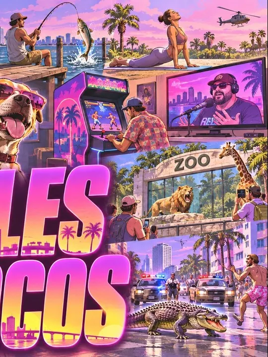
CuriosidadesVer ahoraDatos que NO SABIAS de GTA VI: secretos, easter eggs y detalles alucinantes
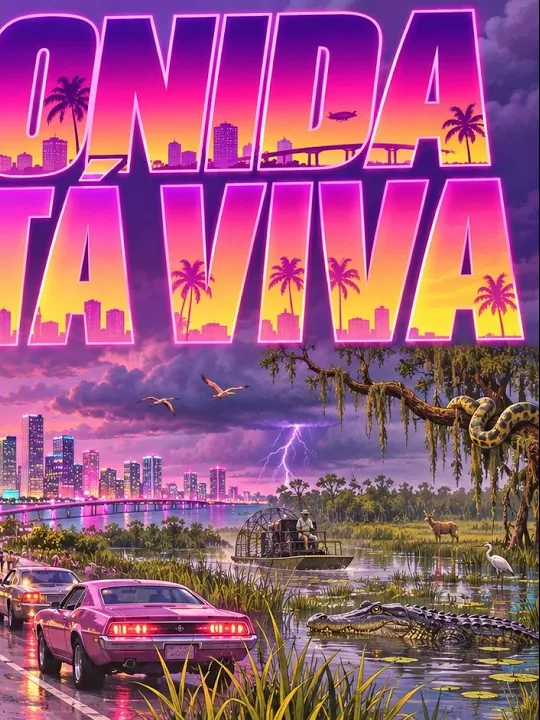
CuriosidadesVer ahora15+ Datos Curiosos Que NO SABÍAS de GTA 6 | Primer Día Jugando
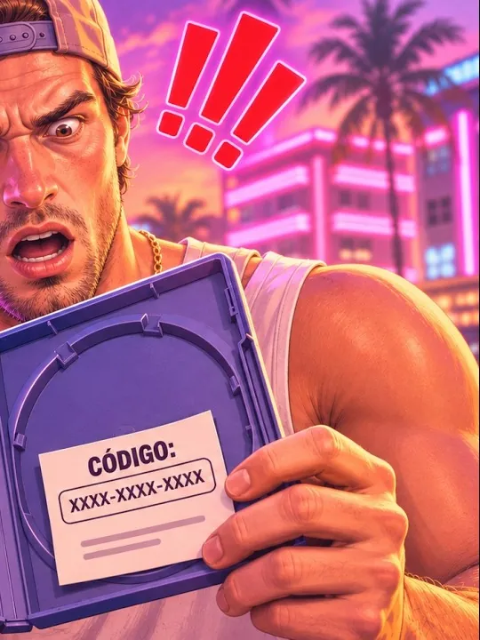
CuriosidadesVer ahora¿GTA 6 en caja vacía? La edición física no trae disco
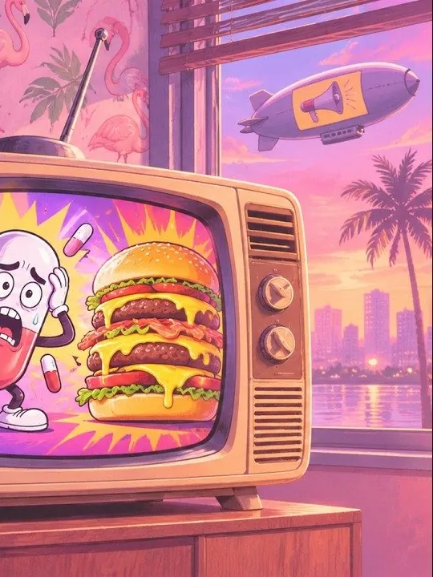
Curiosidades2:19Ver ahoralos anuncios falsos de Rockstar
GTA 6: análisis

GTA 6: shorts
 ShortsVer ahora
ShortsVer ahorapierdes tu dinero en efectivo si mueres
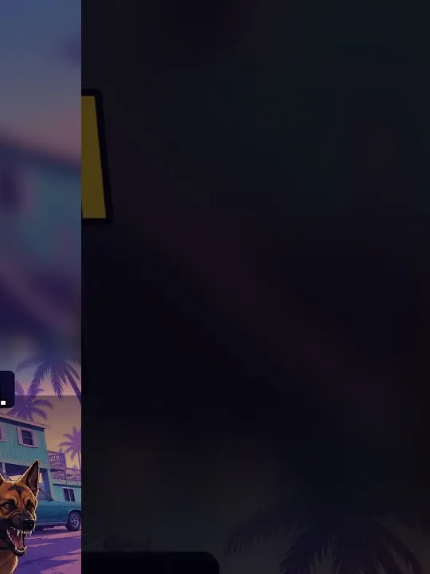
ShortsVer ahoraasí pelean Jason y Lucia (combate y modo Focus)
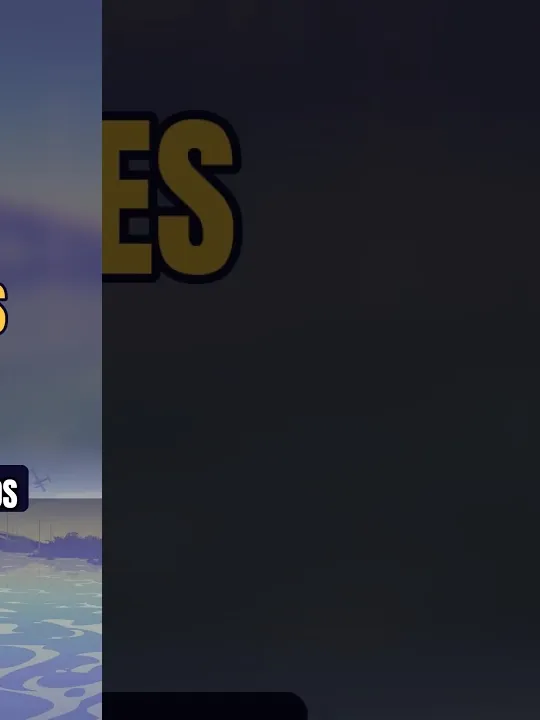
ShortsVer ahorael agua parece agua, y puedes bucear en pecios
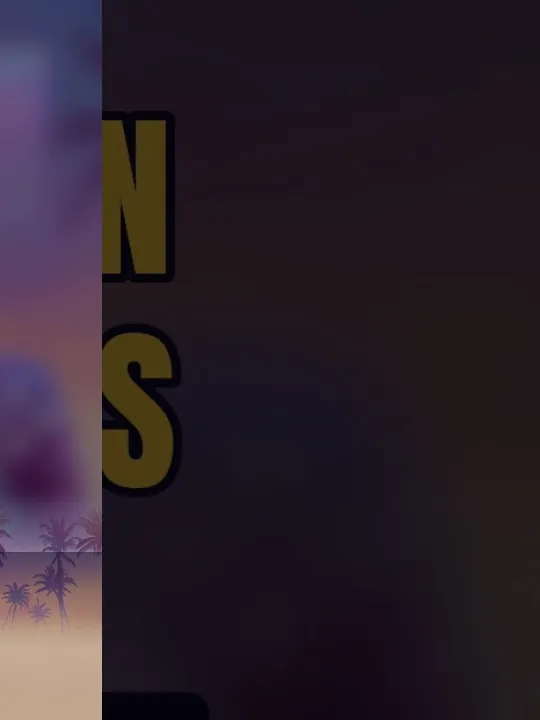
ShortsVer ahorala iguana es real (en Florida caen de los árboles)
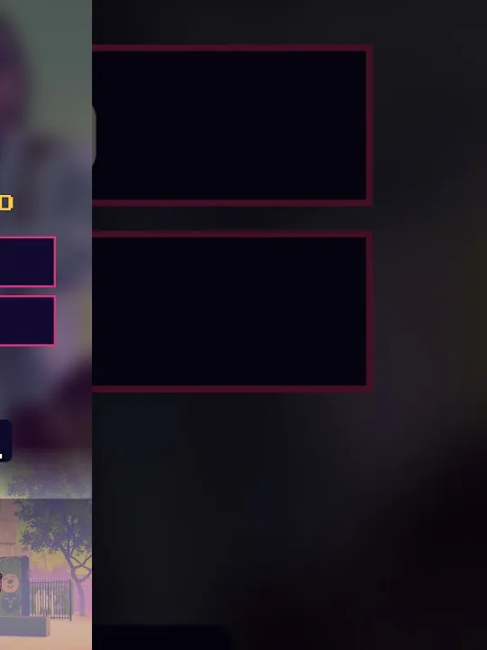
ShortsVer ahoraves un perro y puedes acariciarlo (o gritarle)
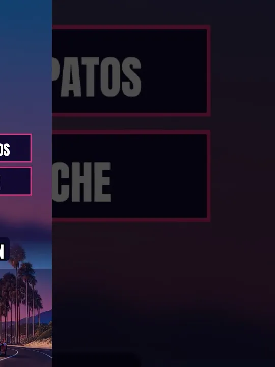
ShortsVer ahorael barro se queda en tus zapatos (3 detalles)
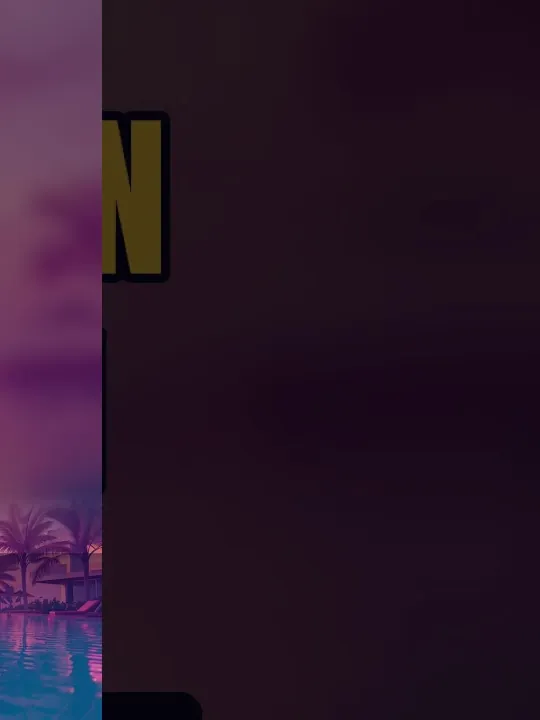
ShortsVer ahorala policía y los 4 iconos que te delatan
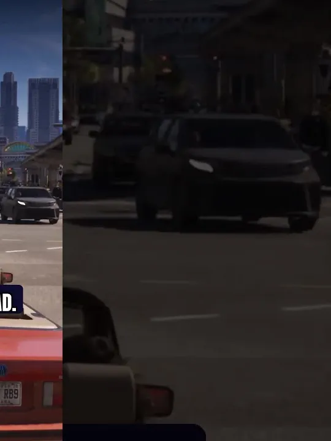
ShortsVer ahoraNo ignores este detalle de GTA 6
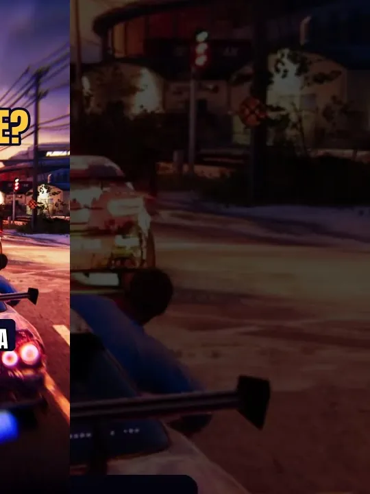
ShortsVer ahoraCURIOSIDADES los coches gastan gasolina (o batería)
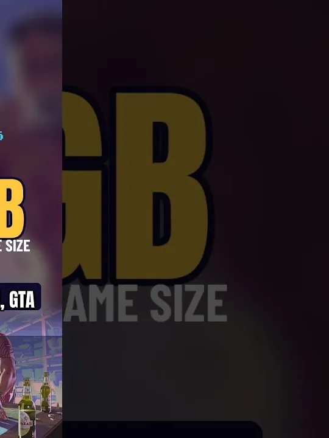
ShortsVer ahora@IlloJuan_ "La lia parda" con el GTA 6
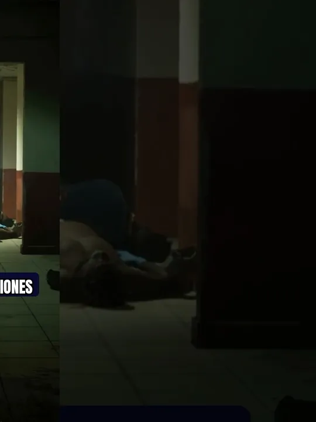
ShortsVer ahora